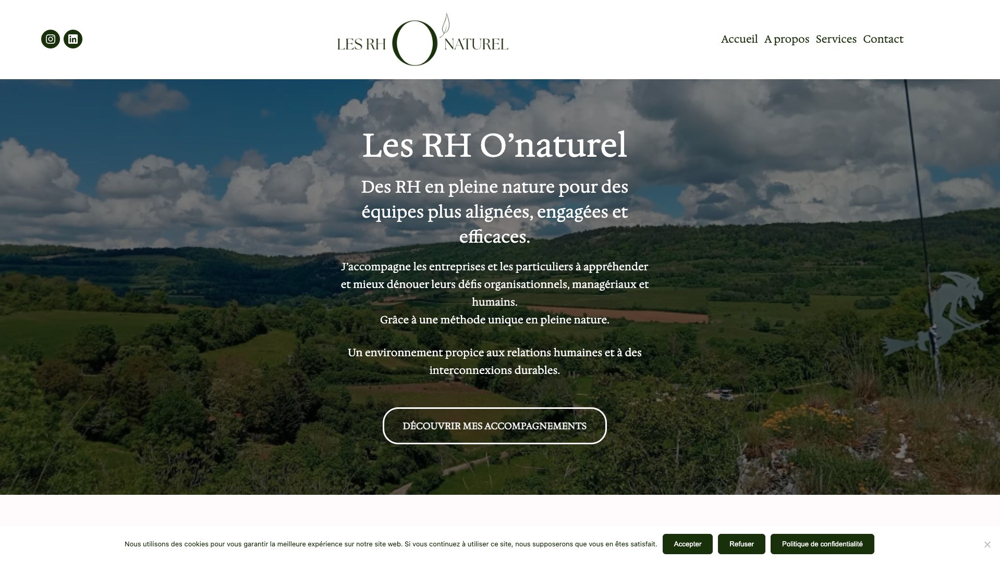
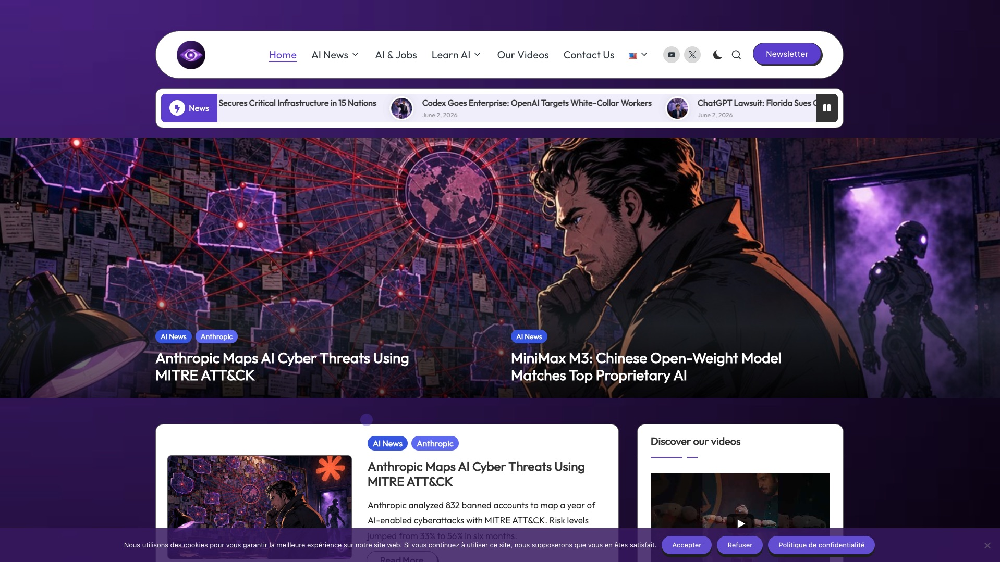
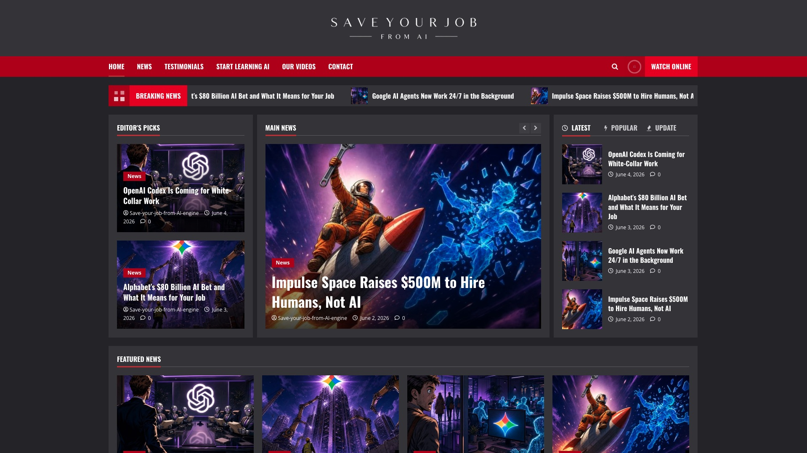
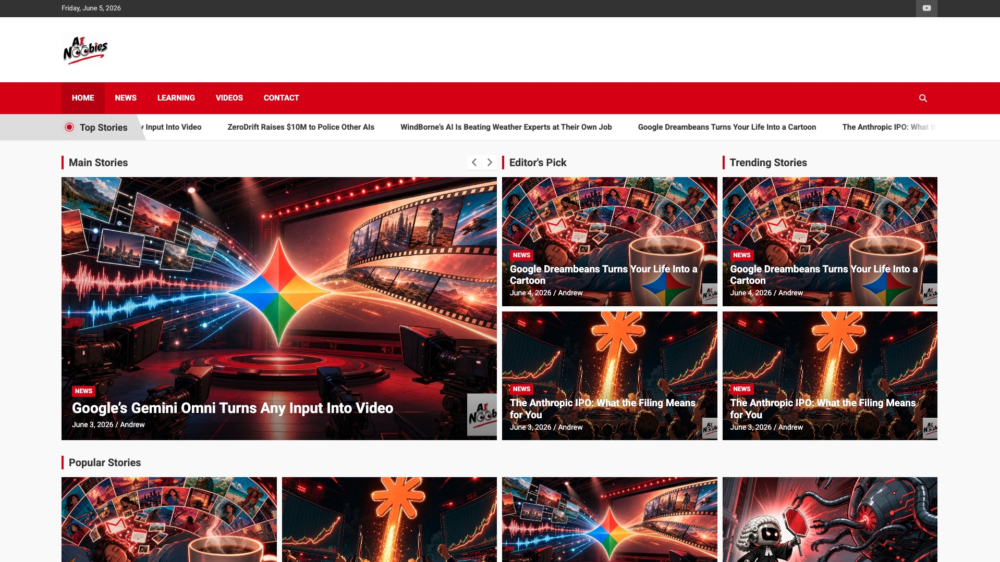
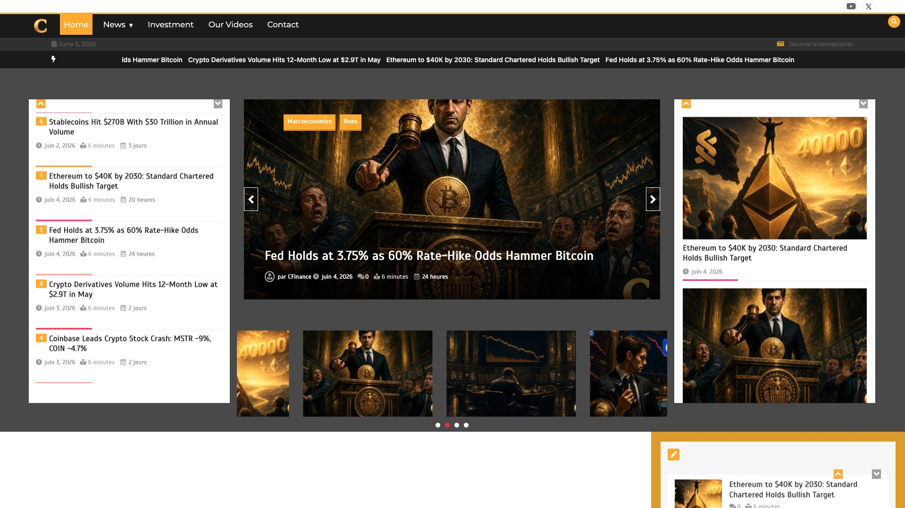
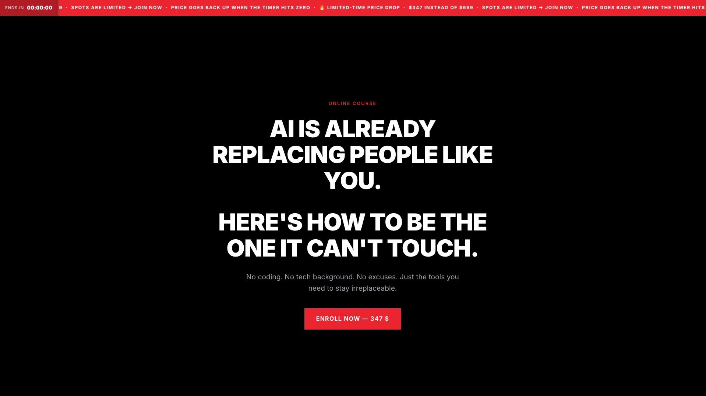
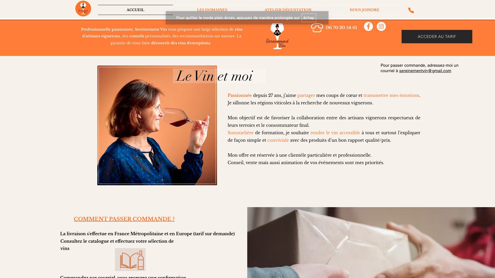

O'Naturel WordPress
Les RH au naturel
Site vitrine pour une coach RH et bien-être, création complète sous WordPress. J'ai également assuré le content design de son compte Instagram — templates de posts et stories cohérents avec l'identité visuelle du site. Showcase site for an HR and wellbeing coach, full WordPress creation. I also handled Instagram content design — post and story templates consistent with the site's visual identity.

Media WordPress
Horizon Media
Plateforme média indépendante sous WordPress. Thème enfant custom basé sur Blogvi/Bloglo — personnalisation complète du design et gestion éditoriale. Independent media platform on WordPress. Custom child theme based on Blogvi/Bloglo — full design customisation and editorial management.

Your Job WordPress
Save Your Job From AI
Site WordPress pour aider les travailleurs à comprendre et s'adapter à l'IA dans leur métier. Contenu éditorial, structure du site, gestion complète. WordPress site helping workers understand and adapt to AI in their field. Editorial content, site structure, full management.

Noobies WordPress
AI Noobies
Site WordPress pour rendre l'IA accessible aux débutants. Guides pratiques, ressources en langage clair — pour ceux qui ne savent pas par où commencer. WordPress site making AI accessible for beginners. Practical guides, plain language resources — for those who don't know where to start.

Finance WordPress
C Finance Media
Plateforme WordPress dédiée aux finances personnelles et à l'actualité investissement. Création complète et gestion éditoriale. WordPress platform covering personal finance and investment news. Full creation and editorial management.

Page HTML / CSS
Save Your Job — Landing Page
Landing page codée from scratch en HTML/CSS pour la formation "Save Your Job From AI". Aucun framework, aucun CMS — juste du code propre. Landing page coded from scratch in HTML/CSS for the "Save Your Job From AI" training. No framework, no CMS — just clean code.

Vin WordPress
Sereinement Vin
Mission freelance sur le site d'une sommelière indépendante. Le site existait déjà — je suis intervenue pour améliorer le visuel, harmoniser le design sur l'ensemble des pages, et créer les nouvelles pages demandées par la cliente. Freelance mission on an independent sommelier's existing site. I stepped in to improve the visuals, bring design consistency across all pages, and create the new pages requested by the client.